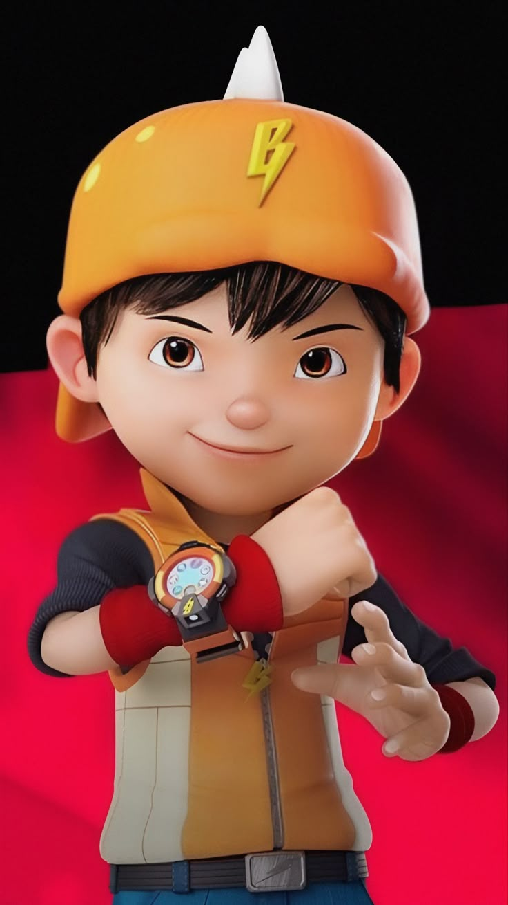

Hello
I am Sitti Aisyah Nur Azizah
Graphic Designer
Dengan ketertarikan pada teknologi dan desain visual serta berbekal keterampilan teknis yang kuat di bidang pemrograman Java, integrasi sistem Flutter-Laravel-ESP32, dan logika komputasi, saya juga terampil dalam olah grafis menggunakan Affinity Designer dan Photo.
